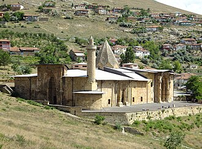

Gambaran
La Grande Mosquée de Divriği, à Divriği, fut construite en 1299. L'architecte est Hürremchah d'Ahlat, et celui qui commanda sa construction est Ahmet Chah, régnant alors sur le beylik de Mengücek. Les inscriptions sur les murs incluent des louanges du sultan seldjoukide de Roum Kay Qubadh Ier. La mosquée est réputée pour la richesse de son décor extérieur : motifs géométriques et oiseaux bicéphales sculptés.
المسجد الكبير ومشفى ديوريجي هو مسجد ومستشفى بناهما الأمير أحمد شاه بين عامي 1228 و1229 في بلدة ديوريغي في محافظة سيواس في تركيا، ومُدرج على لائحة التراث العالمي منذ عام 1985.
Divriği Great Mosque and Hospital was built in 1228–1229 by the local dynasty of the Mengujekids in the small Anatolian town of Divriği, now in Sivas Province, Turkey. The complex is in the upper town, below the citadel. The exquisite stone carvings and eclectic architecture of the complex place it among the most important works of architecture in Anatolia and led to its inclusion on UNESCO's World Heritage List in 1985.
Divriği Ulu Cami ve Darüşşifası, Sivas'ın Divriği ilçesinde bulunan tarihi cami ve hastanedir. UNESCO Dünya Mirası listesindedir. Cami 1228–29 yıllarında Mengücekli beyi Ahmed Şah tarafından; Dârüşşifa ise aynı tarihte, Ahmed Şah'ın eşi ve Erzincan beyi Fahreddin Behramşah'ın kızı olan Turan Melek tarafından Ahlatlı Muğis oğlu Hürrem Şah adlı bir mimara yaptırılmıştır. Darüşşifa caminin güney duvarına dayanmıştır. Orta bölümü bir ışıklık kubbesi ile örtülmüştür, giriş ile birlikte dört eyvandan oluşur. Darüşşifanın kuzeydoğu köşesinde türbe yer alır. Divriği Ulu Cami ve Darüşşifası 1985 yılında Dünya Mirası listesine alınarak Türkiye'den listeye giren ilk mimari yapı olmuştur. Divriği Ulu Cami ve Darüşşifası 2024 yılında Türkiye'nin 50. milli parkı olarak ilan edilen Divriği Milli Parkı içinde yer almaktadır.
Masjid Divrighi, secara resmi bernama Masjid Raya dan Rumah Sakit Divrighi adalah sebuah kompleks masjid dan rumah sakit yang dibangun pada tahun 1228–1229 oleh dinasti Mengujekids yang berada di kota Divrighi, Provinsi Sivas, Turki. Kompleks ini terletak di wilayah kota bagian atas, di bawah benteng. Ukiran batu yang sangat indah dan arsitektur eklektik dari kompleks ini menempatkannya di antara karya arsitektur terpenting di Anatolia serta menyebabkan dimasukkannya bangunan ini ke dalam Daftar Warisan Dunia UNESCO pada tahun 1985.
دیویرغی جامع مسجد اور ہسپتال ترکی کا ایک مسجد جو دیوریغی میں واقع ہے۔
Divriği-Moschee und Krankenhaus, türkisch Divriği Ulu Camii ve Darüşşifa, ist ein während der seldschukischen Zeit in Anatolien 1228/29 von einem Herrscher der Mengücek-Dynastie erbauter Gebäudekomplex in der Kleinstadt Divriği in der türkischen Provinz Sivas. Die nach ihrem Stifter Ahmet Schah auch Ahmet Şah Camii genannte Moschee ist mit dem zeitgleich von Turan Melek, vermutlich seiner Ehefrau, gestifteten Krankenhaus verbunden.
La Gran Mezquita Divrigi en Divriği en la provincia de Sivas (Turquía), fue construida en 1299. El arquitecto fue Hürremchah de Ahlat, y quien comenzó su construcción fue Ahmet Shah, entonces el beylik de Mengücek. Las inscripciones en los muros son alabanzas al sultán selyúcida de Rüm Kaikubad I.
La grande moschea di Divriği, venne costruita nel 1299 in un piccolo centro dell'Anatolia, a Divriği, oggi nella provincia turca di Sivas. L'architetto fu Hürremşah di Ahlat e la moschea venne eretta su ordine del sultano Mengüçoğlu Ahmet Şahn. Le iscrizioni contengono lodi al sultano seljukide Alaaddin Keykubat I.
Divrigi ou Tefrique é uma cidade e distrito da província de Sivas, região da Anatólia Central, Turquia. Fica num declive suave na margem sul do rio Çaltısuyu, um afluente do Rio Cara Su. O distrito tem 2 632 km² de área e em dezembro de 2021 tinha 16 177 habitantes, dos quais 10 748 na cidade.
De Grote Moskee van Divrigi is een met ornamenten versierde moskee in de Turkse stad Divriği, die gebouwd is rond 1229. De architect van de moskee was de Hürremshah van Ahlat, die het bouwde in opdracht van Ahmet Shah, de heerser van de Beylik Mengücek. Gelijktijdig met de moskee werd een hospitaal gebouwd in opdracht van de dochter van de sultan van Turan Melek, Fahreddin Behram Shah.
迪夫里伊大清真寺和醫院 為結合清真寺與醫院之綜合建築，由孟古耶基德王朝建立於今土耳其錫瓦斯省迪夫里伊小鎮中。該建築位於城堡下方的上城，其精密石雕與不拘一格的建築特色，成為了安納托利亞最重要的建築作品之一，並在1985年被聯合國教育、科學及文化組織列為世界遺產。
ディヴリーイの大モスクと病院 は、トルコの世界遺産の1つ。大モスク（ウル・ジャミィ）は、1228年から1229年にかけて、現地のベイリクであるメンギュジェク朝のアフメッド・シャーの手によって、スィヴァス県のディヴリーイに建設された。建築家はアフラト出身のヒュッレムシャーで、碑文にはルーム・セルジューク朝のカイクバード1世を称える文章が記されている。付属する病院（ダリュシュシファ）は、エルズィンジャンの支配者ファフレッディン・ベフラム・シャーの娘トゥラン・メレク・スルタンの発願により建設された。
Улу-джами — комплекс соборной мечети и дарю'ш-шифа (госпиталь), находится в городе Дивриги в Турции, является частью Всемирного наследия ЮНЕСКО. Мечеть была основана Хусамеддином Ахмед-шахом (1228—1252), беем Мангуджакидов, а госпиталь — его женой Туран Мелек.
Đại giáo đường Divriği và bệnh viện là một Giáo đường trang trí công phu và tổ hợp bệnh viện được xây dựng từ 1228–1229 bởi triều đại Nhà Mengüjek địa phương tại thị trấn nhỏ Divriği ở miền Trung Anatolia, ngày nay thuộc tỉnh Sivas, Thổ Nhĩ Kỳ. Tổ hợp này nằm ở phía trên thị trấn, bên dưới thành cổ.
Stora moskén och sjukhuset i Divriği är en vackert ornamenterad moské och medicinskt komplex uppfört år 1299 i bergsstaden Divriği i östra Anatolien, idag i provinsen Sivas i Turkiet. Anläggningen ritades av arkitekten Hürremshah av Ahlat och moskén byggdes på uppdrag av Ahmet Shah, härskare över Beylik i Mengücek. Inskriptionerna innehåller ord som hyllar de anatoliska seldjukernas sultan Alaeddin Keykubad I. Det anslutande medicinska centret (darüşşifa) byggdes samtidigt som moskén på uppdrag av Turan Melek Sultan, dotter till Mengücekregenten i Erzincan, Fahreddin Behram Shah.
Di peta
Dokumen dan tautan
- Wikipédia — Français
- Wikipédia — العربية
- Wikipédia — English
- Wikipédia — Türkçe
- Wikipédia — Bahasa Indonesia
- Wikipédia — اردو
- Wikipédia — Deutsch
- Wikipédia — Español
- Wikipédia — Italiano
- Wikipédia — Português
- Wikipédia — Nederlands
- Wikipédia — 中文
- Wikipédia — 日本語
- Wikipédia — Русский
- Wikipédia — Tiếng Việt
- Wikipédia — Svenska
- Wikidata — Q581641
Data: Wikidata (CC0), diperbarui setiap 3 bulan. Tahun yang dicantumkan adalah tanggal pembangunan tertua yang diketahui dari bangunan tersebut: untuk bangunan yang kemudian menjadi masjid (seperti Hagia Sophia), tahun itu adalah tahun bangunan aslinya. Foto: Wikimedia Commons, pembuat dan lisensi ada di halaman setiap foto.